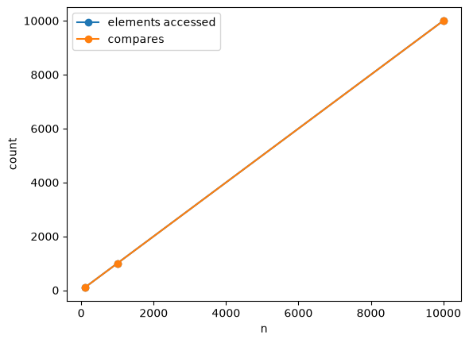

c_sum
def c_sum(
nums
):def c_sum(
nums
):def c_sum(nums):
sum = 0
for num in nums:
sum += num
return sum# nums = [random.randint(1, 10000) for _ in range(10000)]
nums = [7,4,2,3,17,18]
f'{c_sum(nums) = }'
f'{sum(nums) = }''c_sum(nums) = 51''sum(nums) = 51'def c_min(
seq
):def c_min(seq):
#Iterator to walk over the sequence
it = iter(seq)
cmp = 0
# Assume first element as min
winner = next(it)
# walk over rest to compare
for val in it:
cmp += 1
if val < winner:
winner = val
return winner, cmpf'{c_min(nums) = }'
f'{min(nums) = }''c_min(nums) = (2, 5)''min(nums) = 2'def c_max(
seq
):def c_max(seq):
#Iterator to walk over the sequence
it = iter(seq)
cmp = 0
# Assume first element as min
winner = next(it)
# walk over rest to compare
for val in it:
cmp+=1
# if not out_of_order(winner,val):
if not val < winner:
winner = val
return winner, cmpf'{c_max(nums) = }'
f'{max(nums) = }''c_max(nums) = (18, 5)''max(nums) = 18'ns = [100, 1_000, 10_000]
# skip the loop at 1e9 — the two counts are fixed by n
accesses = ns
compares = [n - 1 for n in ns]
plt.plot(ns, accesses, marker="o", label="elements accessed")
plt.plot(ns, compares, marker="o", label="compares")
plt.xlabel("n")
plt.ylabel("count")
plt.legend()
plt.show()
def find_fraud_2sum(
txns, T
):def find_fraud_2sum(txns, T):
cmp = 0
l = len(txns)
for t1 in txns:
for t2 in txns:
cmp += 1
if t1.id != t2.id and t1.amount + t2.amount == T:
return (t1,t2),(l,cmp)
return (None,None),(l,cmp)Txn = namedtuple("Txn", ["id", "amount"])
transactions = [
Txn("TXN1001", 4200),
Txn("TXN1002", 1500),
Txn("TXN1003", 9800),
Txn("TXN1004", 3300),
Txn("TXN1005", 2700),
]
T = 10_000
f'Worst Case: {find_fraud_2sum(transactions,T) = }'
print()
transactions.append(Txn("TXN1006", 5800))
f'Best Case: {find_fraud_2sum(transactions,T) = }''Worst Case: find_fraud_2sum(transactions,T) = ((None, None), (5, 25))'"Best Case: find_fraud_2sum(transactions,T) = ((Txn(id='TXN1001', amount=4200), Txn(id='TXN1006', amount=5800)), (6, 6))"def find_fraud_3sum(
txns, T
):def find_fraud_3sum(txns, T):
cmp = 0
l = len(txns)
for t1 in txns:
for t2 in txns:
for t3 in txns:
cmp += 1
ids = {t1.id, t2.id, t3.id}
if len(ids) == 3 and t1.amount + t2.amount + t3.amount == T:
return (t1, t2, t3), (l, cmp)
return (None, None, None), (l, cmp)transactions = [
Txn("TXN1001", 4200),
Txn("TXN1002", 1500),
Txn("TXN1003", 9800),
Txn("TXN1004", 3300),
Txn("TXN1005", 2700),
Txn("TXN1006", 1000),
]
T = 9200 # 4200 + 3300 + 1700? adjust below
f'{find_fraud_3sum(transactions, T) = }''find_fraud_3sum(transactions, T) = ((None, None, None), (6, 216))'ns = np.linspace(1, 40, 50)
fig, axes = plt.subplots(3, 2, figsize=(10, 12))
axes[0, 0].plot(ns, ns, label="O(n)")
axes[0, 0].set_title("linear")
axes[0, 1].plot(ns, ns**2, label="O(n²)")
axes[0, 1].set_title("quadratic")
axes[1, 0].plot(ns, ns**3, label="O(n³)")
axes[1, 0].set_title("cubic")
axes[1, 1].plot(ns, np.log(ns), label="O(log n)")
axes[1, 1].set_title("logarithmic")
axes[2, 0].plot(ns, np.log(ns), label="O(log n)")
axes[2, 0].plot(ns, ns, label="O(n)")
axes[2, 0].set_title("log vs linear")
axes[2, 1].plot(ns, ns**2, label="O(n²)")
axes[2, 1].plot(ns, ns**3, label="O(n³)")
axes[2, 1].set_title("quadratic vs cubic")
for row in axes:
for ax in row:
ax.set_xlabel("n")
ax.legend()
ax.grid(True)
plt.tight_layout()
plt.show()